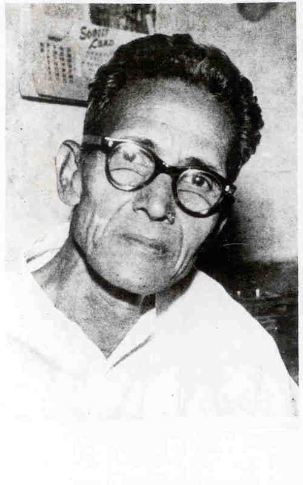

Who was R.B. Moré?
My project focuses on the life of Dalit Communist activist R.B. Moré as a proxy to study the continuum between the rural and urban during the interwar period in the area of Bombay and surrounding villages within Maharashtra. Moré was born in 1903 in the village of Ladawali, moving constantly at a young age between there and Dasgaon, the only village nearby with a school willing to take in Mahars, an Indian community he was a part of that is included in the Scheduled Castes and Scheduled Tribes by the government today. "Dalit," which means broken or down-trodden, is the name that Mahars and others from scheduled castes use to refer to themselves and to their social and political movement. The memoir recounts multiple episdoes across Moré's life as he negotiated caste discrimination and poverty in order to further his education. In that sense, it can be read as a bildungsroman, recounting the formation of the anti-caste activist and how he came to understand caste and class through the discrimination and precarity experienced.

Portrait of R.B. Moré. Courtesy of Prof. Anupama Rao
His Memoir
My project is interested in reading for the rich details about space that exist within the narrative to think about the dynamics between rural and urban space. The text painstakingly describes the constant travelling Moré undertook since a young age between different villages in the state of Maharashtra and the city of Bombay. He recounts the different jobs he performed in order to get money in these new locations, he describes the people he met and those who helped him throughout his journeys and he even discusses his desires, challenges and aspirations that were motivating forces behind his nomadic actions. He includes discussions on untouchability and where it came from, expressing anguish and anger but also hope - he is constantly describing his actions in terms of how they combatted untouchability not only for himself but for an entire community. He also explains how his father's death entrenched his family in starker conditions of poverty that inflicted the most constant suffering to his mother, who unlike Moré, did not travel around nor had access to education. Because of the amount of details in the text, it can be "data-mined." In doing so, I'm positioning his autobiography as a proxy, in order to bypass the lack of more tradional data used in architecture and urban studies. Traditional data used for map visualizations usually come from institutions who have enough resources to carry out a census and other forms of data-gathering. This is often only available for cities in the Global North, who have the necessary infrastructure and resources. However, even in the Global North, rural-urban migration is the least visualized statistic, given the similar range of infrastructural issues in relation to rural areas. Moré's memoir can circumvent these structural issues but raises the question: is this a valid strategy? In biological research, immunohistochemistry (IHC) refers to the process of selectively visualizing proteins in cells of a tissue by binding specific antibodies to the proteins of interest in order to catalyze a color-producing reaction. Amongst its many uses is to detect cancerous cells. In IHC, what is visualized is not the protein itself but rather the reaction between the protein and the antibody, the catalyzed color is good enough given the impossibility of seeing the protein. I am therefore borrowing this same logic that is used in the sciences to produce legitimate “knowledge,” but translating it to the field of history, architecture, and urbanism. In the face of the structural difficulty of obtaining legible data for visualizing the movement between rural-urban areas in the Global South, Moré’s autobiography gives us the antibody we can attach to the process of urbanization in order to “look” at how it takes place.
GIF of Moré Map Visualization
Rural-Urban Visualization
The visualization is not just an interactive map with marked locations but each location is tied to a specific part of the theoretical argument and the theoretical argument refers to media that are embedded in each particular location. It demands the reader to be constantly moving in between the map and the argumentative text. Because of this, the visualization and the argument about what it allows us to see is best experienced full screen. Although embedded below, please click here for a full-screen browser version.Rural-Urban Visualization Deconstructed
The Re-appropriation of Dalit-Communist Reform: Using R.B. More's Autobiography to Visualize the Rural-Urban Continuum of People as Infrastructure
How can a visualization of More’s memoir as a proxy for the dynamics of rural-urban migration help us understand the dispossession of people from rural land ? Furthermore, what can it tell us about how the actions of nomadic actors trying to survive and reform conditions of precarity become appropriated for the reproduction of marginalization and its implied socioeconomic relations? The project tackles this question by contesting that a visualization of Moré’s memoir reveals the rural-urban continuum of people as infrastructure, where collaboration takes place amongst Mahars and other contingently marginalized subjects in order to lay their claim on the spaces they inhabit in spite of caste discrimination and class exploitation. In thinking of the account as a story about people as infrastructure, we open the text up to think about the disposition of the actions of nomadic actors like Moré, who are actively combatting discrimination. The disposition of people as infrastructure within the context of Moré’s life points out how actions furthering a class-caste reform became appropriated through larger social processes of urbanization. They re-territorialize dispossession along axes that did not fit with the class-caste imaginary of reform that Moré operated under, an imaginary that failed to critically attend to gender and the construction of undesirable bodies through notions of respectability.
Photograph of R.B. More. Courtesy of Prof. Anupama Rao
Ladawali: More's birth and the Chabina of Viroba
R.B Moré begins the narrative of his life in Ladawali, during the celebration of the Chabina of Viroba, consciously intertwining geographic space and the events of his life with anti-caste discussion. He describes how untouchability was not practiced during the procession where most of the gods were carried by Mahars like him, a procession that was also taking place at the time of his birth. The intertwinement suggests that Moré wants us to read his text as a critique of untouchability, a sentiment mirrored in the very first sentence: “The first capital of the Marathi state in modern times was Raaigad. It was in the village of Laadawali in the precinct of this same Raaigad that I was born, at dawn on a Sunday on the second day of the lunar month, in the year 1903 C.E. The night of the Chhabina of Viroba at Mahaad was drawing to an end” (1). The quote performs a number of symbolic associations between Moré and Ladawali that establish his tone of critique: by saying he was born on “this same Raaigad” that was the first capital of the Marathi state, he establishes himself as an inheritor and continuator of the political centrality of Raaigad to Maharashtra in relation to Dalit activism, receiving and expanding the tradition of anti-caste thought in the region. Furthermore, with “The night of the Chhabina of Viroba at Mahaad was drawing to an end,” he is also associating his very birth with a suspension of untouchability.
The decision to start his memoir with the Chabina of Viroba also offers us the possibility of looking at the absence of untouchability during the procession from a perspective other than religious practice. It invites us to also look at spatial organization. If the procession is anything like how it is practiced today (see the “Chabina of Viroba Today” marker on Ladawali), one can see that the density of people that attend and the need to walk through a space that can only hold a limited amount of bodies would have made it quite difficult for untouchability to be maintained. Just how in Bombay during this time period rural, Dalit migrants escaped untouchability due to the constraints of the infrastructures of transportation and communication that forced bodies to be in close proximity of each other, the lack of untouchability in the procession might also relate to space itself. My intention behind this suggestion is not to discredit Moré but to introduce physical space as a lens through which to enter the world of the text. Looking at spatial organization allows us to ask: How is the process of urbanization that Moré implicitly describes in his text (a process he is a part of given his constant migration between villages and Bombay) allowing him to combat precarity while simultaneously appropriating his actions and entrenching the conditions of marginalization the memoir is so explicitly against? How can a visualization of More’s memoir as a proxy for the dynamics of rural-urban migration help us see not only the dispossession of people from rural land but how their actions (often directed towards improving their lives) become appropriated for the reproduction of marginalization and its implied socioeconomic relations?
Dasgaon and Dapoli: The Army as a Space of Economic Achievement
Some might argue against my decision to feature the issue of urbanization in relation to this memoir given that it might appear anachronistic to the text. However, if urbanization is understood how Neil Brenner defines it in “Theses of Urbanization” as a process of "creatively destructive patterning of modern sociospatial landscapes" that is predicated upon the dispossession of people from rural land, one recognizes the memoir’s potential to offer a view of how this creative destructive pattern takes place at the level of the everyday. Moré explains that the conditions of poverty that forced him and his family to move happened when moneylenders from Dasgaon tricked his father into giving them their land: “The moneylender sweet-talked him into signing a blank piece of paper, and then he wrote on it that my father had sold his land. Of course the moneylender became owner of that land, and my father, the former owner, became a mere tenant. Inevitably then, it was up to the landowner’s whim whether he would allow my father to go on working the land as a tenant, and in the end the expected happened. One day the moneylender evicted my father from that land for good, and he was obliged to live the painful life of a landless labourer. This happened when my father’s death was two or three years away” (3). The moneylenders turned the land into “private property” that a proper subject, i.e. a subject willing to pay, could own. Moré’s previous symbolic association between himself, land and anti-caste thought allows the reader to easily associate this episode, symbolically, with primitive accumulation. The moneylenders can be understood as agents of urbanization since they probably did the same to more families and those properties were probably brought by other, wealthier Mahars from close-by Dapoli. Dapoli was inhabited mostly by powerful Mahars who had obtain their wealth and social capital after serving in the army. Many moved from Dapoli to Dasgaon after retiring from serivce, leading to the consolidation of a powerful class of Mahars: “With Dasgaon already having the strength of local unity, and with the support of high-ranked military officers who were also their brethren, nobody would dare to cross them, or have the nerve to take away the rights that they had attained. The (Mahar) people of Dasgaon broke the restrictions of religion and tradition to build large houses and wear fine clothes and ornaments. They obtained school education and acquired high government posts” (5). The army gave Mahars from the area the opportunity for upward social mobility, creating an almost symbiotic relationship that can be perceived from the postcard embedded on the Dapoli marker. Given this, the urbanization of Dasgaon is what took the family land but it is also what allowed material conditions of (relative) prosperity, giving Moré access to education since his first school was also in Dasgaon. Therefore, the socio-economic processes that constructed Dasgaon can be seen as the non-place that allows More’s critique to have a chronology. Bhabha explains the importance of the non-place via de Certeau: “In order to appear as material or empirical reality, the historical or social process must pass through an aesthetic alienation or privatization of its public visibility. The discourse of the social then finds its means of representation in a kind of unconsciousness” (143). This “unconsciousness” Bhabha later links to a non-place, “Beginnings require an originary non-place, something unspoken which then produces a chronology of events. Beginnings can, in this sense, be the narrative limits of the knowable, the margins of the meaningful” (146). It is the project of this map to read for that non-place, to discern how urbanization haunts Moré, how it allows him certain degree of success while also appropriating his actions and reproducing the conditions of marginalization at a systematic level.
Alibag: Mobility through Poeple as Infrastructure
Moré received his education in Dasgaon until he travelled to Alibag for an examination that earned him a 3 year scholarship at an English school in Mahad. If his academic career was facilitated by Dasgaon’s level of economic prosperity and his ability to continue educating himself was the way in which he combatted untouchability early on, one must acknowledge how much this success depended on the social relations around him. He describes how he was sent to Alibag by one of his teachers, ”a Brahman called Ramchandra Keshav Khare” (8) who did not practice untouchability and who would visit him when he was ill. To buy appropriate clothing to take the exam, he goes to Tale accompanied by a maternal cousin of his father and to get to Alibag he goes on a 3 day journey on foot with his cousin Namdeo who “knew everything we needed to know…how long it would take to reach Alibag and by which route, and also when the examination was due to start and to end” (10). The way in which the teacher and cousins helped him can be understood under the rubric of people as infrastructure, described by AbdouMalique Simone on her essay “People as Infrastructure: Intersecting Fragments in Johannesburg” as a way to emphasize the “economic collaboration among residents seemingly marginalized from and immiserated by urban life.” Thus, his account can be understood as a story about people as infrastructure, the ways in which the collaborations he sustained negotiated marginalization. Alibag is an early example not only of how people as infrastructure allowed Moré access to resources to fund his schooling, but how people as infrastructure was a way to survive physically and emotionally through the hostility of caste prejudice (see the Alibag marker for quote). People as infrastructure is not just a matter of access to economic resources but it is a matter of surviving through the deterioration that comes about with caste discrimination. By sharing resources (addresses of people in other villages, anecdotal information about the routes, etc.), Moré becomes embedded in a web of social and economic relations between seemingly disparate locations, forming a spatial network of survival amid precarity.
First Visit to Bombay: Re-territorialization of Rural Relations into Urban Space
People as infrastructure becomes a spatial network of survival amid precarity through a re-territorialization of the rural into the urban, connecting recently arrived migrants to already existing communities that resemble those from home. This re-territorialization, however, also becomes a way in which caste relations are maintained, translating untouchability into spatial segregation, at least in early 20th century Bombay. The re-territorialization is a condition of possibility for people as infrastructure to distribute resources while also a way for caste relations to be maintained in the absence of a traditional untouchability practice rendered impossible by the built form of the city. On arriving to Bombay after Alibag, Moré remarks: “This area of chawls was known as Family Lines. A large number of military pensioners and other Mahar people lived in these Family Lines. We went to stay with our relatives who lived there” (11). While I will expand on this point later on since Moré makes similar remarks at multiple different locations, for now, it is important to note that the re-territorialization of the rural suggests a necessary flexibility to the people as infrastructure in order to be able to combat the gratuitousness of discrimination that can happen anytime, anywhere as seen by the refusal from the English school in Mahad to enroll Moré even after he obtained a scholarship: “I was told that they were willing to take me into the school, but Dharap, who was the owner of the school building had told them, ‘If you admit a Mahar boy into the school I will not rent my building to you’” (13). For an image of the area where Family Lines was, click on the Family Lines marker.
Return to Ladawali and Going to School in Mahad: More becomes an Activist
When 11-year-old Moré is refused enrollment from the school, he begins his activist career. He returns to Ladawali where he meets playwright Yashwant Narayan Tipnis and either Govind Gopal Tipnis or Anant Vinayak Chitré - all of whom were family friends involved in anti-caste protest thought. They help him write and publish a letter denouncing the school on the basis of caste discrimination: “They said that since I had won a government scholarship, the school at Mahaad would have to admit me. After that they dictated some things for me to write down on a piece of paper. I wrote it down and when I went home I copied it on to a postcard and sent the card to an address that they had given me” (14). The letter is effective since he “was called to the school” (14) for enrollment. The infrastructure space produced through their exchange becomes crucial for a successful negotiation with untouchability, allowing Moré to go to Mahad. Once there, he further develops his political consciousness, as seen by the tea shop for Mahars he opened up so that they could have a place to drink water while traveling: “All except the Mahaars could quench their thirst by asking the shopkeepers for water or going to the Mahaad lake. But the Mahaar people were reduced to a pitiable state in this regard. My heart became heavily burdened when I saw the cruel derision I have described above, to which they were subjected by well-to-do passers-by, and their problems in getting water to drink” (16). Addressing this cruel derision is the first time in the memoir where we see Moré actively becoming part of the people of infrastructure for a community concern: “I called a meeting in the Mahaar wada in Mahaad one day. Mahaar people from various villages in the Mahaad precinct were present at the meeting. After discussion it was decided that a tea shop would be set up in a field near the wagon yard. A condition was to be imposed that the person running the teashop would have to provide drinking water free of charge to our people…My going to the Mahaad school was, at least in Mahaad, a victory for the movement against untouchability” (17-18). By saying that his going to school was a victory for the movement against untouchability, he is further linking his life to caste critique, sustaining the rhetorical intertwinement which he used at the beginning. See the English School in Mahad marker for more.
If More’s memoir can be read as an account of people as infrastructure combating untouchability, it allows itself to be read for that infrastructure’s disposition. On “Extrastatecraft: The Power of Infrastructure Space,” Keller Easterling describes disposition as the place where the contradiction lies, between what the infrastructure says it’s doing and what it is actually doing. What does it mean to read for the disposition of people as infrastructure in Moré’s account? It means to uncover “accidental, covert, or stubborn forms of power” hiding behind it. It meanings reading for the non-place. Easterling’s emphasis on the stubborn forms of power behind infrastructure space is useful in relation to the issue of urbanization as it allows us to flesh out the operations of power sustaining the contradictions found in the text. Because it is power that disposition seeks to render visible, I argue that in the depicted moments of primitive accumulation (moments where Moré’s actions, relations and resources become appropriated by what we can retroactively call a logic of urbanization), we can see how power constitutes lived, conceived and perceived space at the level of the everyday. The moment of primitive accumulation that surfaces on the text quite frequently is the constant hardship Moré’s mother had to experience at the hands of her dead husband's cousins. The cousins housed More's mother after he died. They were also stealing from her any surplus: “Every month or two she would take me on a trip to Dasgaon and check what still remained and what had gone from our belongings. Whenever she discovered that rafters from the roof or materials for construction and carpentry work had disappeared, she would blame the people from the big house. They would treat me with affection and quarrel with my mother. Nobody paid heed to her protests and exhortation” (13). The affection they showed him was a way to secure the money from his scholarship to them, “My mother was not happy about [him spending all his time between Dasgaon and Mahad. But the people from the big house in Dasgaon would call me there with a show of affection and I, out of diffidence, would not go against their word. Later, when I began to get my five rupee per month scholarship, that money would go to them” (19). The moment of corruption (the paternal family taking the resources from the mother) is a moment of primitive accumulation as it contributes to the lifestyle of the paternal family, earlier described as being the center of social life in Dasgaon. The comments about his mother suggest that the entrenching of marginalization is not necessarily perceived by Moré, but rather by bodies who are constructed differently along the axis of gender. Whereas he can easily take advantage of people as infrastructure, the activities he exerts through it (going to school and earning a scholarship) are still able to dispossess along intersecting lines of class-caste and gender, making the mother feel it most acutely. Eventually, Moré also experiences the results of the stealing of his scholarship money when it runs out a year before it was supposed. During the year that elapsed between the English school refusal of his enrollment and the publishing of the letter, the big house family kept taking all of the scholarship money. However, Moré's felt dispossession happens at a different degree of intensity from his mother who must negotiate with it daily. Her only income was “to collect firewood, chop it into small pieces, then tie it up with plant fibres and bring it home, and finally make small bundles to sell in that village or the next” (20). The fact that it is his mother who experiences the everyday precarity exacerbated by the big house’s corruption even when Moré himself is not affected until later demonstrates that his actions, even when trying to combat untouchability, can easily be re-appropriated by the interlocking systems of oppression that inflict themselves differently. It is a stubborn form of power that changes itself in response to people’s actions.
Back in Dasgaon and Charai: The Re-territorialization of Dispossession On Gender
Gender as a determinant for the intensity of felt dispossession is also seen through the paternal’s family decision to marry Moré to his cousin in the advent of him moving to Bombay for work. The family marries him as a way to secure remittances; the job becomes a replacement for the scholarship money: “Neither I nor my mother were enthused to hear that my marriage had been arranged. My mind was distressed because I had had to leave school for lack of money, and my mother was always tense because of her widowhood and the trials she had to suffer” (21). Even after More becomes agreeable to the marriage, his wife can be understood as another victim of the dispossession that takes place along the lines of gender in the deployment of people as infrastructure since a) she completely disappears from the narrative after the brief mention of their marriage and b) she is merely functioning as a way to make sure Moré will keep sending money back to Dasgaon. In considering the way dispossession operates along the lines of gender, we can see how the disposition of people as infrastructure is a continuation of marginalization through spatial relations that immobilize certain gendered bodies.
After the wedding, Moré visits his in-laws in Charai where he meets a thief, an episode that foreshadows who his acquaintances in Bombay will be. His meeting in Charai allows us to start thinking about who are the “people” in the people of infrastructure and how they come together despite different processes of marginalization that aren’t necessarily along caste. His wife’s father, a rich landowner called Putalya Mahaar Patil, admired a thief in the Tale region called Chandrya Kaatkari (please see Charai marker). When Moré mentioned he wanted to go to Tale to see the jatra, his father-in-law enlists Chandrya to take him: “It was two or three days later that I learnt from Dada that the person who had carried me on his shoulders through the forest was a well-known robber of those parts. It was only when I became acquainted with Marxism as an adult that I understood why brave and decent people like Chandrya become robbers” (23). Like Moré, Chandra is a marginalized subject. He steals not to create property like the moneylenders in Dasgaon but if “anyone tormented the poor too much, he would teach them a lesson” (23). From the thief’s behavior one can see that the affiliation between the people as infrastructure comes from a shared sense of marginalization from the larger social order. Given that Moré mentions how he only understood his behavior after being exposed to Marxism, it shows that this moment of solidarity is not understood through the lens of caste but through the lens of class exploitation. The thief, unclear whether Mahar/Dalit, becomes a contingent actor in the people as infrastructure that helps Moré out of a sense of solidarity. He is undesirable like Moré, but the salient source of marginalization is the construction of his character as a “thief,” not an untouchable.
Second Visit To Bombay: Ambedkar, the Army, Prostitutes and Tamasha Players
After the remittance-marriage is secured, Moré is sent to Bombay under the promise of a family friend who said he’ll get him a job as tax collector. It does not materialize. In its absence, Moré’s description of his time in Bombay underlines the importance of the re-territorialization of the rural into the urban space as it facilitates relationships of familiarity and contingency that help him negotiate emotional distress and the material conditions of the city: “I had been staying with a distant relative in a chawl in Family Lines. We used to call his mother Aka. I and three or four others from Daasgaon were staying at Aka’s place” (25). Moré is not only constantly returning to the same space in Bombay but he is also constantly surrounded by people from where he came from, a familiarity that encouraged affective relationships of trust and solidarity amid destitution, “It was four or five months since I had arrived and I had still not found a job. So I was not able to pay for my food. Nobody rebuked me, rather I was showered with affection.” (25). The familiarity allows him to be easily introduced to organized frameworks of thought surrounding marginalization. It is during his first visit to Bombay when, “I saw Dr. Ambedkar for the first time. Seeing Dr. Ambedkar made me acutely aware of the importance of getting an education” (25). By being with Aká in Family Chawls, Moré was embedded in a thick social life that introduced figures like Ambedkar, who start functioning diegetically and extra-diegetically as a role model for his own moral and political aspirations. Ambedkar gives Moré the language to think caste along class, introducing him to more orthodox thinking surrounding class exploitation.
Ambedkar as a role model for Moré’s aspirations, for who he wants to be and how he imagines reform, shapes the way Moré begins to narrate his affective ties towards other contingent actors like the thief. They give him access to money and other social spaces such as theater even if they are constructed as “bad:” “Most of the people living there earned their living doing some work connected with the army. (25) Just then someone told me about a job; it was for just a month and a half, a leave vacancy, but the wages were forty-five rupees” (25). This moment is one of re-territorialization where the dynamics described earlier as allowing Mahars access wealth in Dapoli and Dasgaon repeat themselves in the city, creating a form of “universal knowledge” shared around the people as infrastructure: wherever Moré goes, he kind of knows the army can always provide him a job (see the Alexandra Docks marker on map). The army opens up Moré’s social life to a wider range of contingent actors. Their introduction is where the reader can start seeing how his aspirations begin to construe certain people within the infrastructure as “bad” even while enjoying their company and relying on them for survival (see the Haji Bandar marker). By entering new areas of the city that are not familiar, he is introduced to social actors who are construed as undesirable not along class or caste but through the figures of the “prostitute” or the “addict.” By narrating the “prostitute/smoker/gambler” as separate from his tamasha friends doing “high art” despite the likeliness that many of the people surrounding him were probably doing both (the “bad and the good things” as implied), Moré narrates himself as a character that is somewhat distant from the social life he is describing even if he depended on it at the everyday level. The distance is also a signifier for his adherence to what’s “good:” educating oneself like Ambedkar did. In adopting Ambedkar as role model, Ambedkar begins to function diegetically and extra-diegetically as what shapes Moré’s understanding of who is understood as “good.”
Arrival to Pune: The Alegaonkar High School and the Distance from "Bad Things"
Moré’s aspirations for his life turn Ambedkar into a moral prerogative for reform. His idea of change is what allows Moré to narrate some of the people within the people as infrastructure as “friends” and others as somewhat distanced from the “good life.” When he arrives to Pune, his narration repeats the pattern described earlier with Bombay: the “universality” of the re-territorialization of rural relations into urban spaces is seen when Moré realizes the family members he knew in Pune knew nothing about the city except for army-related spaces: “their knowledge was limited to the cantonment area of Puné…They said, “We have nothing to do with Poona city. We hardly ever go there.” Even the children of the Modi Khana area did not go to school with children from the city. There were separate schools for these children in the vicinity. Just as in Bombay I had lived in the Family Lines meant for army people, so did I find myself among military people in Modi Khana. In the villages there were separate areas for our folk. I felt that even in Bombay and Puné there were separate colonies for us, but I did not at the time understand who had separated us in this way” (32). Moré’s quoting of what “they” said gives a referential authority to his text that serves as indicting evidence against those who he “now” understands as being the culprits for spatial segregation along caste lines: those practicing untouchability. However, while living the spatial segregation and before he could understand the pattern he was experiencing as such, it functioned as a mental map of the places that Moré could go to negotiate precarity. The cantonment (like the docks in Bombay) provided him a job as Hindi-English translator between sergeant and prisoners, with a good enough income to send money back home (always stolen by the big house family’s corruption) and to pay for the Alegaonkar Night High School (for more on the army and Dalits see the Modi Khana marker). The arsenal also exposed him to contingent social actors: some who gave Moré shelter after leaving the relatives he distrusted, others who shared the vices he understood as “bad.” His dea of “bad” becomes the limits of his reform and what determines who in the narrative becomes legible as a friend and who is just a distant other (please go to the Alegaonkar High School marker). In transforming the figure of Ambedkar into a moral prerogative for reform through an enshrinement of education that determines who he will gradually distance from, Moré denies the possibility for other lifestyles to also be capable of reform, for those “bad” people to also be characters in their own right. What is at stakes with that denial is that it leaves unaddressed the larger structural issue that Moré’s adopted tactic has not been able to attend, the fact that his aspiration and the money funding it keeps effecting a dispossession of Mahars (his own mother) along the axis of gender difference. By denying the possibility that lifestyles different from what Ambedkar espoused can lead to legitimate forms of reform, his work and thinking stays within the limits of the class and caste thought traditions he inherited, even as he can be seen as somewhat successfully staving off untouchability from himself.
Bombay for the Third Time: The Imaginary of Reform: Education, Labor and Solidarity
The figure of Ambedkar is part of a larger imaginary within the diegesis of the text, an imaginary that places education as a stepping stone into a desired “higher class.” The figure of social reformer Tilak and the space of theater are also prominent in this landscape, one that shapes who can be narrated as a “friend” and in what context while foreclosing alternative possibilities of reform and solidarity. While in Pune, Tilak’s death and subsequent funeral procession in Bombay offer Moré the chance to leave on a special train arranged exclusively for those who wanted to attend the funeral. After that, instead of going to his relatives in Family Chawl, he decides to go to a play, an activity he earlier associated with trying to rise to a higher class. In doing this, Moré constructs himself “rising” to that desired class, as enjoying pleasures that others who aren’t trying wouldn’t. The play ends late and he decides to sleep on the Bhatia Gardens (now the circle in front of Asia Society) where his money and possessions get stolen. He does not return to his family but rather tries to earn back the money he lost by working on the docks, “Sometimes I could not get work for as long as four days. At such times I would barely eat something with the help of my friends at work. My friends too were like me. We helped each other as friends and accomplices” (40). The imaginary Moré weaves around reform allows him to narrate his solidarity with others as “friends and accomplices” only in the context of labor, only when he is also poor and working with others who are “trying,” unlike those with “vices” and even his mother who is narrated solely as a victim. In other words, he inherits and reproduces the caveats of orthodox caste-class thinking that fail to imagine reform and solidarity outside the figure of the worker. For a discussion on how this imaginary of reform that dictates lines of solidarity translates into physical space please go to the Sardargruha marker on that map.
Returning to Mahad: The Tea-Shop as a Space for Political Action
The limitations of Moré’s imaginary can be seen in the way he narrates his relations to others, but also in the way he leaves the exploitation of his mother unaddressed even as he is organizing larger-scale political action through the tea-shop in Mahad. After Bombay, Moré returns to Mahad to work as a teacher, earning enough money to enroll back. During this time, he describes how “that tea-shop” he had help open up had become “a virtual information centre for a circle of about sixty square miles around Mahaad. Raigad, Pratapgad and the villages of the valley come within that circle” (46). Given the influx of Mahars, Moré utilized the resources of people as infrastructure to make “a decision of historical importance: to hold a conference of the Colaba District Outcaste Association in Mahaad under the chairmanship of Dr. Bhimrao Ramji Ambedkar. The heads of caste panchayats were entrusted with the responsibility of collecting three rupees a head from each and every village, to cover the expenses of holding the conference. Now a new air of enthusiasm sprang up among the untouchable youth in the marketplace. Everywhere there was talk about the prospect of Ambedkar Saheb coming to Mahaad for a big gathering” (49-50). Despite the efforts to have this conference in order to bring attention to the social standing of Mahars, Moré mentions how this prevented him from being home and allowed a continued exploitation of his mother. He even becomes complicit through affective manipulation: “Because I was caught in the deceitful net of false affection that the people at the big house cast over me, and I still did not have the courage to break out of it. I behaved just as those people asked me to behave. They, rather than my mother, exerted their authority over me” (42). The stark contrast suggests that Moré’s mother and their relationship to the corruption of the big house family cannot be narrated and understood under the rubric of political action as easily as access to water can. In describing his organizing efforts side by side with his mother’s suffering, Moré’s text points ever so slightly towards the limitations of his own imagination of what reform is and what a legitimate field of political action can be. It underlines how issues related to gender are constantly left out because political action revolves around an imagined male victim. This is the condition of possibility for attention to be deflected from the ways in which urbanization and the very actions that seem to enact reform are appropriated by stubborn forms of power that stick to his mother.
Conclusion: Return to Bombay and the financing of Mahad Conference
The narration of what Moré had to do to materialize the Mahar conference not only allows us to see the contradiction of Moré’s actions (the ways they are re-appropriated) in relation to gender difference, but also how even Ambedkar exhibits contradictory behavior towards certain subjects, a behavior that constructs them in the periphery of change as actors lacking the ability for self-determination. When Moré goes to Bombay to try to secure funding for the conference, he meets Ambedkar for a second time who “inquired about where I lived, what I did, how far I had studied and so on, and expressed his satisfaction. He then said to me, “You don’t know what people of the Konkan are like. They are very obstinate. They will always say, what we do is as it should be. They will say, who is this Christ-lover coming here telling us what to do? And they won’t listen to me.” To which I answered, “Saheb, they listen to me so they will certainly listen to you.” In the end he said, “I have no time just now. Come back during the Diwali vacations and we will see what we can do.” (50). Ambedkar justifies his reluctance by saying how “obstinate” the people of Konkan are, mobilizing this adjective like Moré previously utilized notions of prostitution, gambling and addiction to dismiss certain people. Even when Moré argues against his excuse by saying that if they listen to him, they’ll listen to Ambedkar, his response still constructs the people of Konkan as docile followers; they are imagined as “people” insofar as they require the help of leaders like them. He then meets with Ambedkar’s brother and others in the Social Service League who encourage him to organize the conference and help him craft the plan of putting up a play and use tickets sales to fund it. However, they refuse to help him sell the tickets: “when it came to the question of selling tickets, he flatly refused to sell the tickets himself or to get someone else to sell them, pointing to the people’s bad habits and addictions” (51). “Bad habits and addictions” functions again like “obstinate” and “bad people” - serving to dismiss certain bodies from the possibility of becoming actors of social change. Ironically, these same people with bad habits and addictions have helped Moré survive and they are the people he relies on to sell the tickets: “I went to meet three friends of mine who lived in the servants’ quarters of St. George Hospital in the Fort area. I told them about all this business of selling tickets for the play. All three of them were working as uniformed guards or peons. Two of them were barely literate and the third had passed the fourth standard examination in Marathi school. With the help of these friends I managed to sell some four-anna tickets and about twenty eight-anna and ten-anna tickets.” (51). The conference in the village of Mahad becomes possible only through the socio-economic relations in urbanized spaces like Bombay. His organized political action thus relies on urbanization to combat precarity while ignoring the way in which this same urbanization inflicts new forms of immiseration along different axes of power beyond caste-class, including gender and a mobilization of certain undesired subject positions like the prostitute, the addict, the bum. Moré’s adoption of Ambedkar as role model gave him the language to articulate his caste-class critique but also shaped the limits of his imagination, replicating the same caveats Ambedkar’s own thought produced, which included ignorance about how marginalization transforms itself so that it is felt more intensely by certain others while allowing a privileged subaltern to perceive improvement.
Postscript - Nomads-As-Infrastructure: Appropriating the War Machine
My coincidental use of the word “nomadic” to describe More’s actions is particularly apt when considering the role of the figure of the nomad in Deleuze and Guattari’s Thousand Plateaus. While not discerned in the first version of this project, I am now extending its importance given a number of overlaps between the reality described in More’s text and the way in which Deleuze and Guattari use the term nomadology in relation to the state apparatus. What follows is a theoretical suggestion on what More’s people as infrastructure can tell us about (the failure of) revolutionary thought and its materialization in space.
The visualized account of R.B. More’s memoir understood as a story of people as infrastructure trying to survive systematic precarity is also an account, or another way of getting at, nomadology. Deleuze and Guattari use “nomad” not as a signifier for a fixed identity attached to certain bodies, but to refer to a certain condition: “The nomad is not at all the same as the migrant; for the migrant goes principally from one point to another, even if the second point is uncertain, unforeseen, or not well localized. But the nomad goes from point to point only as a consequence and as a factual necessity; in principle, points for him are relays along a trajectory.” The multiple points geolocalized from the memoir are points in a trajectory of survival, locations that More had to go to in order to fulfill his goal of education in spite of his marginalized condition as an ‘untouchable.’ He therefore fits the description of the Deleuzian nomad since his movement is necessary for combatting class and caste exploitation. The continued movement along the trajectory in Moré’s account, we must remember, happens because of the stubbornness of caste and class to exert their power over him and people like him. He moves across locations to areas with people that are similarly protecting themselves from marginality. There is no respite, as seen by how in Bombay the rural poor experience is reterritorialized in the chawls or in Pune where his relatives have no knowledge of spaces outside the army. Therefore, More and the people he describes seem to be embedded in a lived experienced of “Deterritorialization par excellence,” because “there is no reterritorialization afterward as with the migrant, or upon something else as with the sedentary… With the nomad, on the contrary, it is deterritorialization that constitutes the relation to the earth, to such a degree that the nomad reterritorializes on deterritorialization itself.” Crucial here is the reterritorialization on deterritorialization. Caste and class made Moré’s attempt at “improving” was one predetermined by ubiquitous marginalization. Moré and those he portrays in the memoir can be persuasively described and understood as nomads.
Given this overlap, we could retrospectively understand “people as infrastructure” in the context of Moré’s memoir as “nomads-as-infrastructure.” This change also allows to bring to the front another critical point from Deleuze and Guattari, who connect the nomad as the agents and operators of the “war machine.” The war machine is of a nomadic organization, an entity wholly exterior to itself and the State, capable of tremendous, threatening change but also potentially appropriate-able, i.e. prone to failure. On its own, the war machine is intent on the “drawing of a creative line of flight, the composition of a smooth space and of the movement of people in that space.” This creative line of flight can be seen as a generic category to be filled out by the particularities of the nomad in their specific context. Thus, the war machine of the nomads in More’s memoir would be the creation of a space outside that of the State that allows a “flight” from marginalization. In other words, the war machine is not about war at all - it is a utopian project. However, it’s proclivity to fail comes from its dynamics with the state apparatus: “political sovereignty, or domination, has two heads: the magician-king and the jurist-priest…they function as a pair, in alternation, as though they expressed a division of the One or constituted in themselves a sovereign unity…In every respect, the war machine is of another species, another nature, another origin than the State apparatus…Between” the magical-despotic State and the juridical State containing a military institution, we see the flash of the war machine, arriving from without…One would have to say that it is located between the two heads of the State, between the two articulations, and that it is necessary in order to pass from one to the other. But “between” the two, in that instant, even ephemeral, if only a flash, it proclaims its own irreducibility.” The war machine takes hold in moments of flux. The memoir, written in the interwar period, takes place during the movement from one head of the State (the magical-despotic incarnated in British colonialism) and the other (the juridical State to come with the Indian Constitution and the establishment of a modern Indian nation). While exterior and indifferent to the state, the war machine is an agent of metamorphosis that is appropriate-able: “The State has no war machine of its own; it can only appropriate one in the form of a military institution, one that will continually cause it problems.” War is its intent only when it falls under the jurisdiction of one of the heads of political sovereignty. In this case, the memoir is not an account of the war machine drawing a creative line of flight, but a snapshot of the nomad-as-infrastructure, the war machine frozen in space-time in the moment where it is already becoming appropriated by the juridical state. Let’s remember how Moré mentions the army as a special place for Mahars to experience what can be somewhat described as upward mobility. Recalling how Mahar history imagines the past as one where Mahars joined forces with the East India Company to combat Peshwa rule and the discrimination they suffered under it, one sees how that is one moment of appropriation of the nomadic war machine. The second appropriation, the moment where the other head of the state apparatus takes place is exhibited in the memoir itself, when Moré’s heterodox understanding of class/caste fails to take account gender and repeats the caveats of more orthodox marxism even as it mutates with the inclusion of the caste analytic.
Therefore, nomads-as-infrastructure can be a tentative shorthand to describe the moment in space-time when the war machine is in the process of becoming already appropriated (again). In this case, the appropriation happens not as explicitly through military institutionalization (since it happened before already with the Mahars-East India Company alliance) but through the shaping of heterodox revolutionary thought after a more orthodox imaginary. The war machine analytic supplements people as infrastructure. Nomads-as-infrastructure can give a theoretical account for the appropriation of tactics of survival and emancipatory desires and imaginations for the perpetuation of a State apparatus even as this appropriation will be one that will continually cause problems to the State itself, thinking to today and the riots that took place and threatened to shutdown Mumbai at the beginning of 2018.
Theoretical Framework
Using the memoir as a proxy for rural-urban dynamics allows us to understand Moré as an agent in an instance of people as infrastructure1
, where collaboration takes place amongst marginalized subjects in order to lay their claim on space, survive through the physical, emotional and psychological distress caused by caste discrimination and poverty, and as a way to make their dreams and aspirations come true. Reading the memoir as a story of people as infrastructure allows us also to think about the disposition2
of such infrastructure. It is a way to visualize the invisible yet stubborn forms of power behind the infrastructure that re-appropriate Moré's actions to inflict dispossession along axes of power that Moré's imaginary of reform cannot account for. His activism forefronts class-caste but fails to take into account gender and other bodies that are constructed as undesirable through the mobilization of notions of morality and respectability. Please refer to the map itself for a more thorough and detailed account of the argument.
Please note: footnotes not visible on mobile.
Return to Student Projects